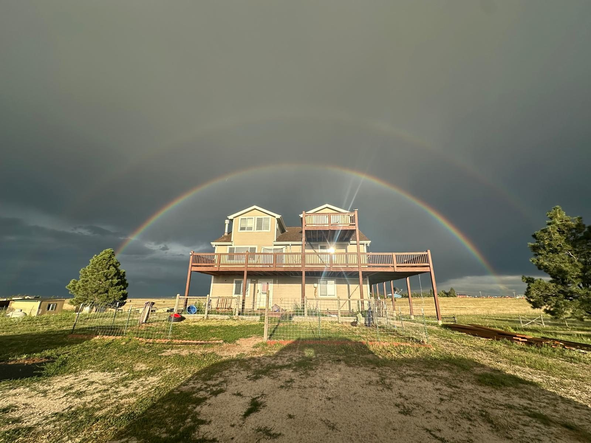
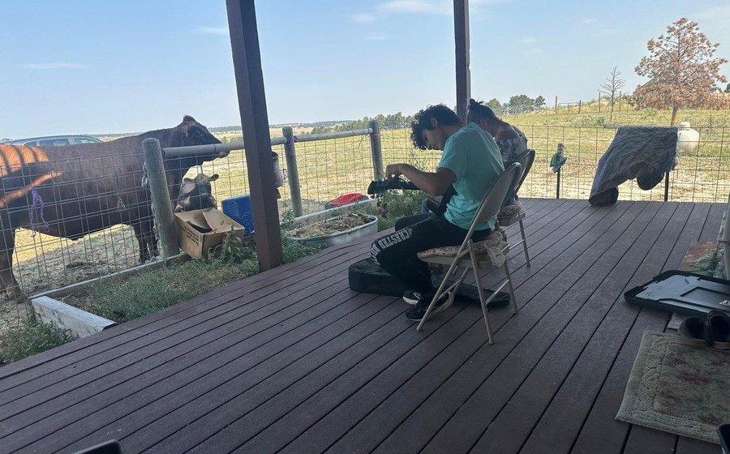
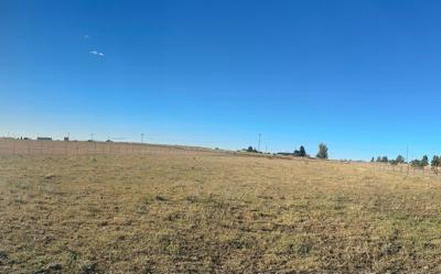
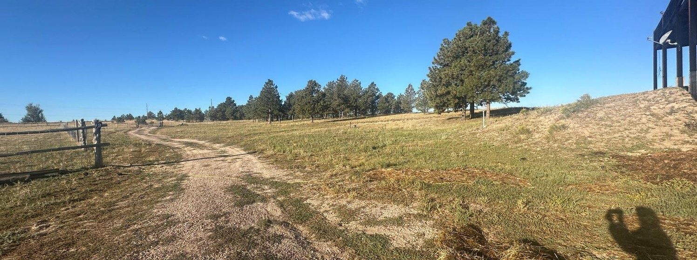
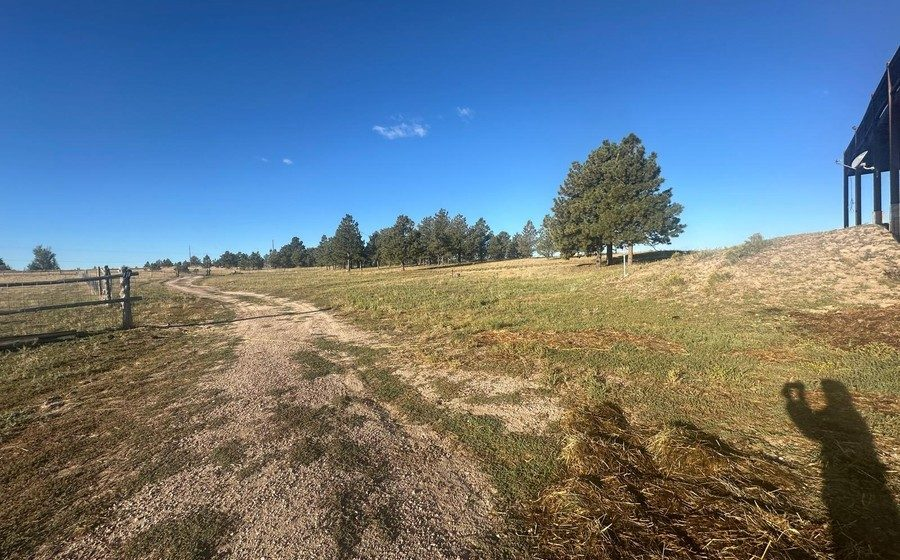
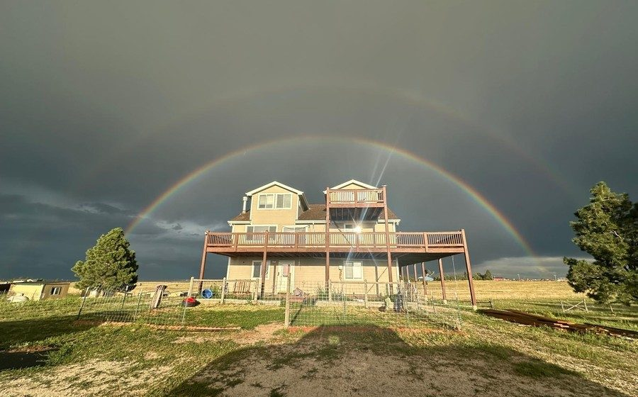
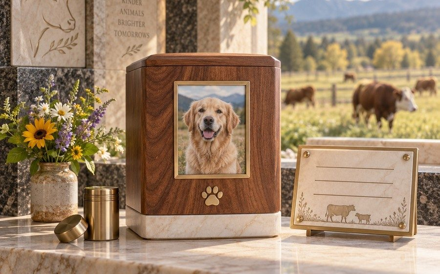
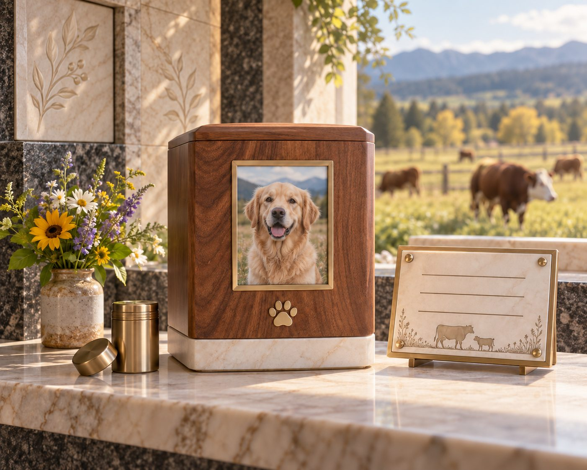
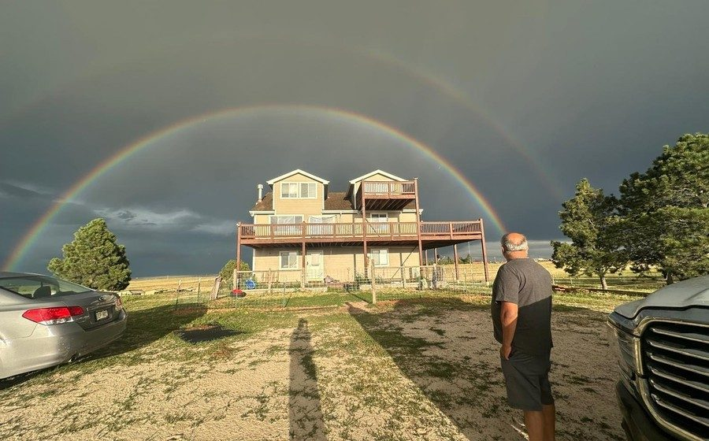
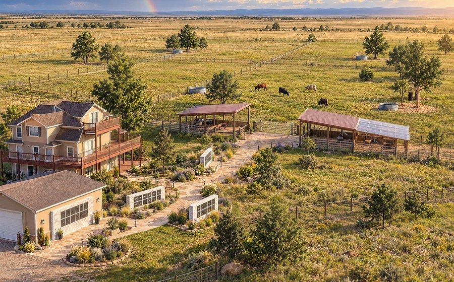

GoRunGo Ranch • at Truck Yeah Traders Farm
Create a permanent remembrance for a beloved dog, cat, or companion animal. Your memorial helps support food, shelter, veterinary care, pasture, and the future indoor sanctuary for GoRunGo, Shyami, Kanai, and Rukmini.
Their memory becomes cow-seva
When a companion animal passes, their love doesn't have to end. A GoRunGo Ranch memorial turns that love into lifelong care for cows who need shelter, food, and safety — one animal's memory helping sustain the peaceful life of another.
Choose a memorial
Two options are available today. Physical wall placements will open only after Elbert County land-use, insurance, and legal approvals are complete — no cremated remains are accepted before then.
Secure payment by Stripe — we never see or store your card. Prices are launch recommendations and may change before physical placements open.
How it works
Select a digital tribute or a refundable founding reservation.
Enter your pet's name, dates, and a tribute, and upload a favorite photo.
Confirm the package, terms, and privacy choice before anything is charged.
Complete checkout through Stripe. Your order is confirmed by our system, never by the browser alone.
Physical memorials only, later: we personally confirm eligibility and send your unique memorial ID and shipping steps.
Later: use the USPS-compliant process with your memorial ID. Nothing is mailed before written approval.
Later: we verify receipt, approve the plaque/photo proof, and place the memorial in its protected niche.
Later: you receive completion photos and visit information, and the memorial page is activated.
Meet the cows
Every memorial helps provide food, shelter, veterinary care, pasture, and — one day — a daylight-filled indoor sanctuary. The cows' welfare always comes before spectacle.

Cared for at the ranch that carries their name.
Part of the small herd your memorial helps sustain.
Given shelter, pasture, and steady daily care.
Safe, fed, and looked after for life.


Where funds go
Program support helps fund four areas of care. The exact percentage split is being finalized with our accountant and counsel, and will be published here once formally adopted.
Building, utilities, bedding, and equipment for a welfare-first indoor sanctuary.
The wall, grounds, records, and long-term maintenance.
Feed, veterinary care, and emergency needs.
Payment fees, support, records, and compliance.
Purchases are program support, not tax-deductible charitable donations, unless the legal entity and your receipt explicitly establish eligibility.
Safety & permanence
Photo, payment, and records connect through a single unique memorial ID — never a handwritten name alone.
When physical placement opens, receipt uses two-person verification, locked storage, and a documented custody log.
Defined maintenance, a perpetual-care reserve, and clear property-sale and relocation contingencies.
Land & county planning
GoRunGo Ranch is being designed as a low-impact, land-respectful use of this 35-acre property, which the owner identifies as within Elbert County's Economic Development Zone. Its open-space preservation, agricultural character, thoughtful buffering, and phased development are intended to support a constructive Elbert County review.
County approval is pending, not guaranteed. Elbert County requires Board of County Commissioners approval of an EDZ Site Development Plan at a public hearing before this use begins, and other building, access, fire, and zoning requirements may apply. Physical-remains intake and public visits stay disabled until those approvals are issued.
Ranch progress
We begin with what already exists. The renderings below are architectural visions, not construction promises — each is clearly labeled a concept and paired with a real photo of the property as it is now.



Conceptual renderingAn outdoor memorial wall opening toward open pasture.

Conceptual renderingA dignified sealed urn and matching plaque for a protected niche.

Conceptual renderingA planned garden woven through the grounds.

Conceptual renderingThe GoRunGo Ranch arrival, carrying the rainbow identity.
Questions? Email dispatch@truckyeahtraders.com.